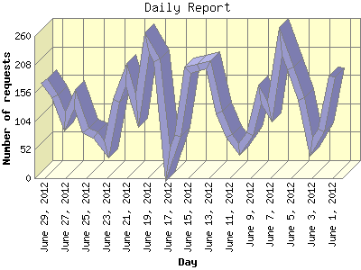

The Daily Report identifies the activity for each day within the reporting period. Remember that one page hit can result in several server requests as the images for each page are loaded.

| Day | Number of requests | Number of page requests | |
|---|---|---|---|
| 1. | June 1, 2012 | 186 | 46 |
| 2. | June 2, 2012 | 87 | 22 |
| 3. | June 3, 2012 | 57 | 23 |
| 4. | June 4, 2012 | 144 | 30 |
| 5. | June 5, 2012 | 200 | 46 |
| 6. | June 6, 2012 | 250 | 53 |
| 7. | June 7, 2012 | 121 | 24 |
| 8. | June 8, 2012 | 153 | 34 |
| 9. | June 9, 2012 | 81 | 23 |
| 10. | June 10, 2012 | 53 | 17 |
| 11. | June 11, 2012 | 78 | 21 |
| 12. | June 12, 2012 | 120 | 29 |
| 13. | June 13, 2012 | 207 | 42 |
| 14. | June 14, 2012 | 203 | 53 |
| 15. | June 15, 2012 | 197 | 42 |
| 16. | June 16, 2012 | 78 | 27 |
| 17. | June 17, 2012 | 25 | 23 |
| 18. | June 18, 2012 | 216 | 50 |
| 19. | June 19, 2012 | 247 | 50 |
| 20. | June 20, 2012 | 124 | 21 |
| 21. | June 21, 2012 | 189 | 39 |
| 22. | June 22, 2012 | 141 | 36 |
| 23. | June 23, 2012 | 52 | 21 |
| 24. | June 24, 2012 | 79 | 25 |
| 25. | June 25, 2012 | 88 | 21 |
| 26. | June 26, 2012 | 145 | 34 |
| 27. | June 27, 2012 | 104 | 27 |
| 28. | June 28, 2012 | 150 | 36 |
| 29. | June 29, 2012 | 177 | 44 |
Most active day June 6, 2012 : 53 pages sent. 250 requests handled.
Daily average: 33 pages sent. 136 requests handled.
This report was generated on June 30, 2012 06:51.
Report time frame June 1, 2012 01:01 to June 29, 2012 22:19.
| Web statistics report produced by: analog 6.0 / Report Magic 2.21 |